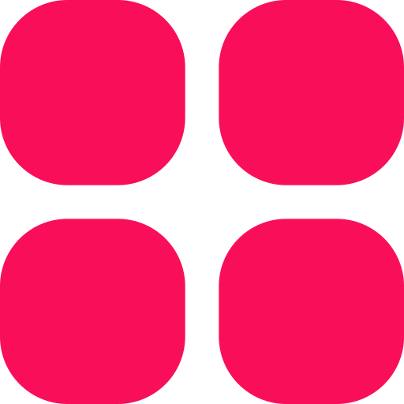

<!-- [ngClass]="{'dark' : darkModeService.isDarkMode()}" -> esto si es que no usas ::ng-deep -->
<mat-drawer-container class="sidenav-drawer" autosize >

  <!--* Barra lateral  -->      
  <!-- [mode]="(ish$ | async) ? 'over' : 'side'" [opened]="(ish$ | async) === false"                                                                   -->
  <mat-drawer #drawer class="sidenav"  
  [mode]="getScreenWidth<=pixelResponsive?'over':'side'" [opened]="getScreenWidth<=pixelResponsive?false:true" [autoFocus]="'flase'" >

    <div class="cont-sidenav-list">

      <!--* pefil info -->
      <section class="cont-perfil-info">

        <div class="cont-btn-menus ">
          <button mat-icon-button [matMenuTriggerFor]="menu" aria-label="Example icon-button with a menu" color="warn" >
            
          </button>
          <mat-menu #menu="matMenu">
            <button mat-menu-item  (click)="getScreenWidth<=pixelResponsive? drawer.close() : '' " routerLink="/page/perfil" >
              <mat-icon  style="color: var(--color-button-02);">person</mat-icon>
              <span class="font">Mi perfil</span>
            </button>
            <button mat-menu-item (click)="singOut()">
              <mat-icon  style="color: var(--color-button-02);" >logout</mat-icon>
              <span  class="font">Cerra session</span>
            </button>
          </mat-menu>
        </div>

        <div class="animate__animated animate__zoomIn animate__faster cont-img">

          

        </div>

        <div class="cont-info font">
          <span class="animate__animated animate__fadeInDown">{{emailUser}}</span>
          <span class="animate__animated animate__fadeInDown">{{roles}}</span>
        </div>

      </section>
      <!--* END - pefil info -->


      <!--* lista de botones -->
      <!-- !PUEDES AGREGAR ESTAS CLASES PARA ANIMAR  => animate__animated animate__backInLeft animate__fast -->
      <section class=" cont-menu-list">
        <ul>

          <li *ngFor="let m of menus" >
            <button *ngIf="m.url!=='/page/perfil'" mat-flat-button (click)="getScreenWidth<=pixelResponsive? drawer.close() : '' " [routerLink]="m.url" [routerLinkActive]="'active'" [routerLinkActiveOptions]="{exact : true}" class="font">
              <mat-icon >{{m.icon}}</mat-icon>
              <span>{{m.nombre}}</span>
            </button>
          </li>


          <!-- <li>
            <button mat-flat-button class="font">
              <mat-icon >fact_check</mat-icon>
              <span>Gestion de facturas</span>
            </button>
          </li>
          <li>
            <button mat-flat-button class="font">
              <mat-icon >outgoing_mail</mat-icon>
              <span>Solicitud</span>
            </button>
          </li>
          <li>
            <button mat-flat-button class="font">
              <mat-icon >design_services</mat-icon>
              <span>Servicios</span>
            </button>
          </li>
          <li>
            <button mat-flat-button routerLink="" class="font">
              <mat-icon >commute</mat-icon>
              <span>Gestion de flota</span>
            </button>
          </li>
          <li>
            <button mat-flat-button routerLink="/page/trabajadores"  [routerLinkActive]="'active'" class="font">
              <mat-icon >recent_actors</mat-icon>
              <span>Gestion de conductores</span>
            </button>
          </li>
          <li>
            <button mat-flat-button routerLink="/page/clientes" [routerLinkActive]="'active'"  class="font">
              <mat-icon >contacts</mat-icon>
              <span>Gestion de Clientes</span>
            </button>
          </li>
          <li>
            <button mat-flat-button routerLink="/page/geolocalizacion" [routerLinkActive]="'active'" class="font">
              <mat-icon >my_location</mat-icon>
              <span>Geolocalizacion</span>
            </button>
          </li>
          <li>
            <button mat-flat-button routerLink="/page/calendar" [routerLinkActive]="'active'" class="font">
              <mat-icon>calendar_month</mat-icon>
              <span>Gestion de actividades</span>
            </button>
          </li> -->

        </ul>
      </section>
      <!--* END - lista de botones -->
    </div>

  </mat-drawer>
  <!--* END - Barra lateral  -->


  <!--* contenedor de screens -->
  <mat-drawer-content class="cont-drawer">


    <!--* cabezera -->
    <div class="cont-breadcrumb">
      <app-breadcrumb></app-breadcrumb>
    </div>
    <!--* END - cabezera -->

    <!--* screens  -->
    <div class="cont-router">
      <!-- (activate)="onActivate($event)" -->
      <router-outlet  ></router-outlet>
    </div>
    <!--* END - screens  -->

  </mat-drawer-content>
  <!--* END - contenedor de screens  -->
</mat-drawer-container>